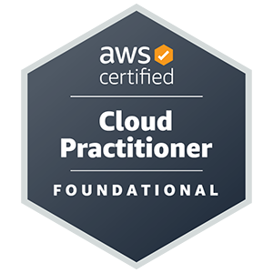

Jenny Drew

Summary
I am an experienced and reliable customer service professional with over
eleven years of experience.
2 x certified AWS Solutions Architect.
Education
Riverside Secondary school (1985-1990)
Experience
AWS Student and AWS Academy Mentor
Oct 2022 - present
- Mentored 3 separate cohorts.
- Led a project team of 9 architecting a static website.
Sainsbury's Customer Experience Clerk
Aug 2011 - Dec 2022
- Resolved customer complaints and found solutions.
- Was flexible and adaptable in a fast paced dynamic enviroment.
- Handled challenging situations with empathy, patience and professionalism.
Career Break
2007-2011
UBS Investment Bank Cash Management Clerk
2005-2007
- Funding and reconciliation of cash management account.
- Resolving reconcilaition queries
HSBC Bank Payments Clerk
1990-2004
- Processing international Payments
- Resolving customer queries
- Reconciling bank Nostro accounts.
Skills
- Proficient in many AWS technologies and services.
- Strong problem solving skills to meet organisational goals.
- Ability to percieve and understand client needs and requirements.
- Strong organisational and time management skills.
- Ability to innovate processes and procedures to improve project efficiency and effectiveness.
- Continous learning mindset to stay updated with the latest AWS technologies and services.
- Ability to work independently and with a team.
- Excellant customer service skills.
- Adaptable, resilient and flexible.
Certifications


Other
My Hobbies
Contact Me